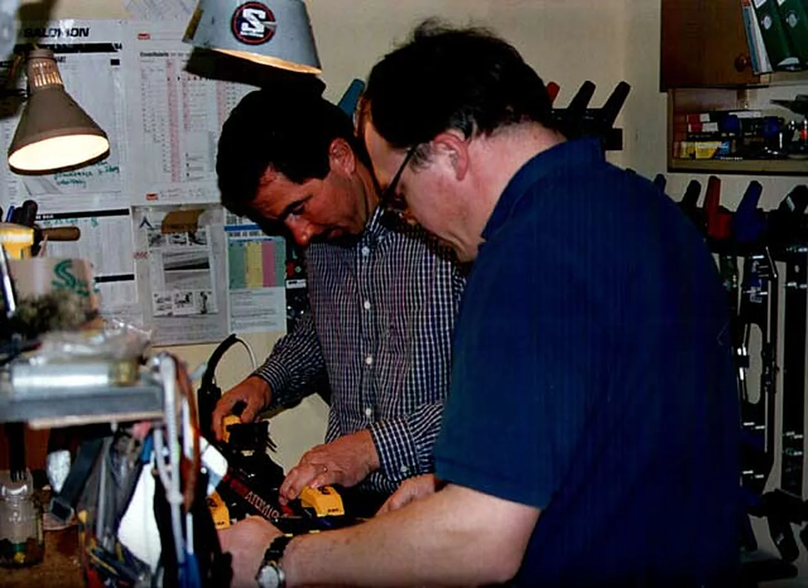
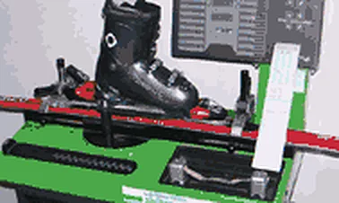
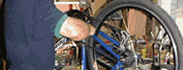
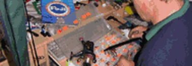
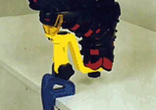
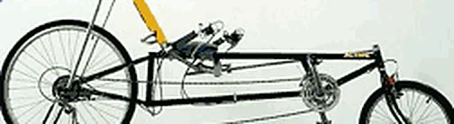
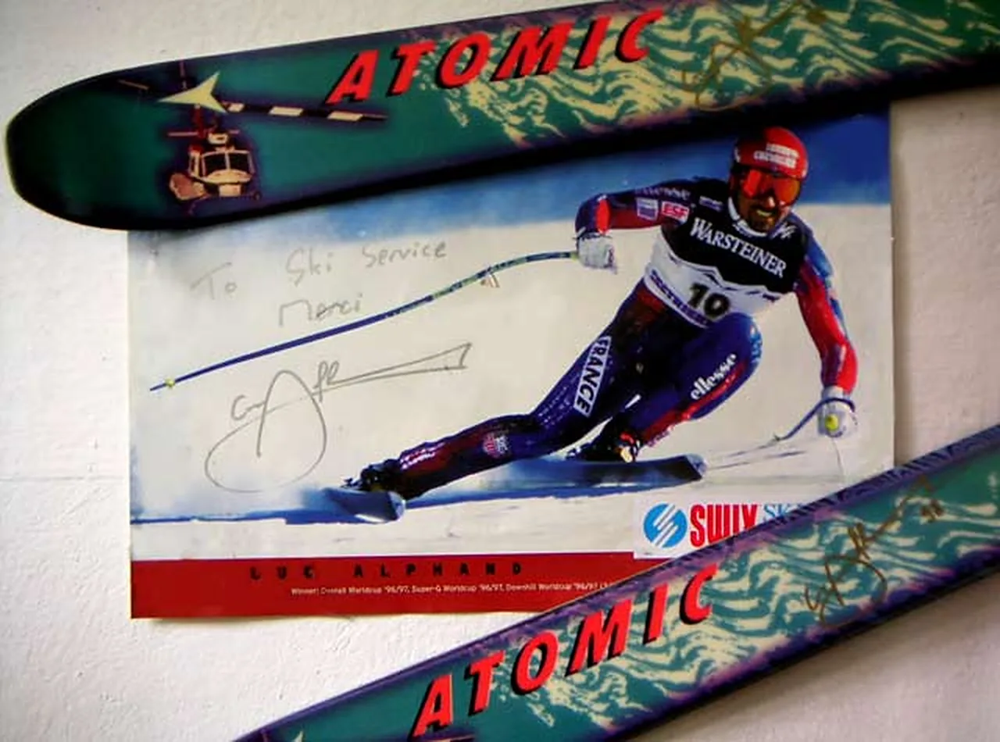
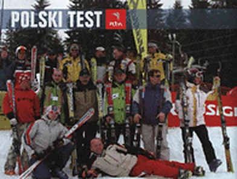

Sprzęt przygotowany jak na zawody.
Serwis nart, snowboardów, rowerów i sprzętu wędkarskiego w Katowicach. Dla zawodników i amatorów, od 1989 roku.
- Serwis od 1989 roku
- Kilkanaście certyfikatów producentów
- Kontrola wiązań na maszynach Skitronic

Krzysztof Sołtysik, właściciel, przy przygotowaniu nart z Lukiem Alphandem, zdobywcą Pucharu Świata 1997Co serwisujemy
Każdy rodzaj sprzętu ma osobny zakres prac. Wybierz, żeby zobaczyć szczegóły.

Narty i snowboard
Montaż i kontrola wiązań na maszynach Skitronic, ostrzenie krawędzi, smarowanie, struktury ślizgów, buty.
Zakres serwisu
Rowery
Szosowe, MTB, BMX, trekking, cross i trial. Przeglądy gwarancyjne, amortyzatory, części na miejscu.
Zakres serwisu
Wędkarstwo
Naprawa kołowrotków i wędzisk, wymiana przelotek, zbrojenie blanków, sprzęt na zawody.
Zakres serwisu
Rolki i hulajnogi
Wymiana łożysk i kół, mycie i smarowanie łożysk, wymiana hamulców.
Zakres serwisu
Przeróbki na zamówienie
Adaptacja sprzętu według projektu klienta i dopasowanie do indywidualnych potrzeb.
Zakres serwisuSerwis wyrosły z serwisu narciarskiego
INTERSA powstała w 1989 roku przez wydzielenie się z długoletnio działającego serwisu narciarskiego. Od początku obsługujemy szeroki zakres sprzętu sportowego: narty, rowery i sprzęt wędkarski.
Nasz personel przygotowuje i naprawia sprzęt zarówno dla zawodnika, jak i dla sportowca-amatora. Pracownicy uczestniczą w szkoleniach i testach organizowanych przez producentów.
Najwyższa jakość usług dzięki markowym częściom zamiennym i profesjonalnemu sprzętowi serwisowemu.Dewiza INTERSA

Certyfikaty producentów
W czasie działalności uzyskaliśmy kilkanaście certyfikatów producentów sprzętu sportowego, m.in.:
- Atomic
- Rossignol
- Marker
- Salomon
- Tyrolia
- Fischer
- RST
- Wintersteiger
- Skitronic
- Skid
- Reichmann
- KT Technic
- Wunderli
- Romet
- Author
- Shimano
- Madshus
- Swix
Stała współpraca serwisowa
Zapraszamy do współpracy firmy sponsorskie, wypożyczalnie sprzętu sportowego oraz zespoły, które potrzebują stałej obsługi serwisowej. Przygotowujemy sprzęt do zawodów i obsługujemy go podczas ich trwania.
Napisz do nas
Przynieś sprzęt do punktu przy Warszawskiej 60
Wjazd w podwórze, obok warsztatu samochodowego. Proste naprawy rowerów robimy na poczekaniu.